01. Overview
Group trips rarely move as one unit. Convoys traveling across cars and bikes routinely split due to junctions, toll plazas, and varying speeds. Ride Along is a proposed session-based companion layer inside Google Maps navigation designed to keep groups connected and coordinate stops without unsafe phone calls.
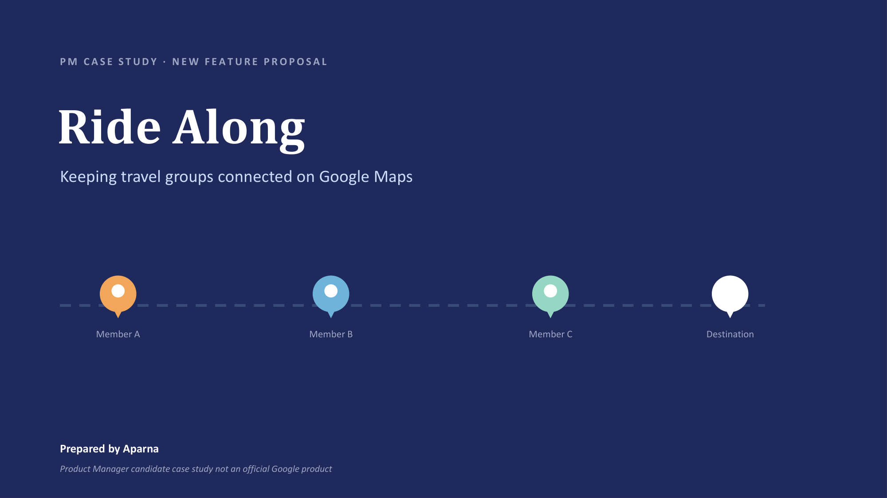
02. The Core Problem
During multi-vehicle journeys, drivers face constant anxiety about friends falling behind on unfamiliar highways or taking wrong exits. Rebounding signal dead zones and coordination friction often ruin the travel experience.
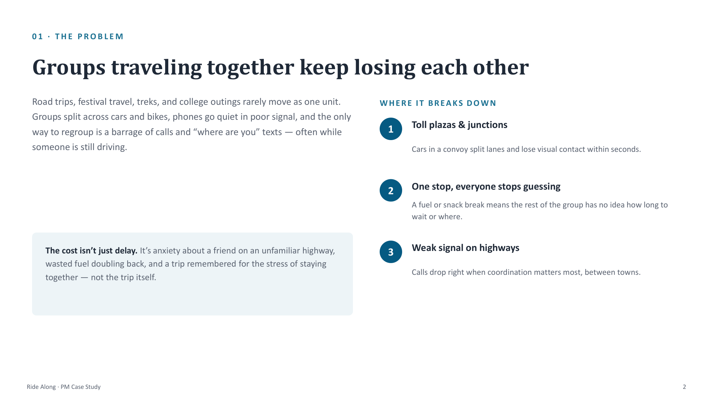
Target Personas
The proposal addresses two core travel behaviors: trip organizers managing multiple vehicles, and family drivers managing caravan coordination.
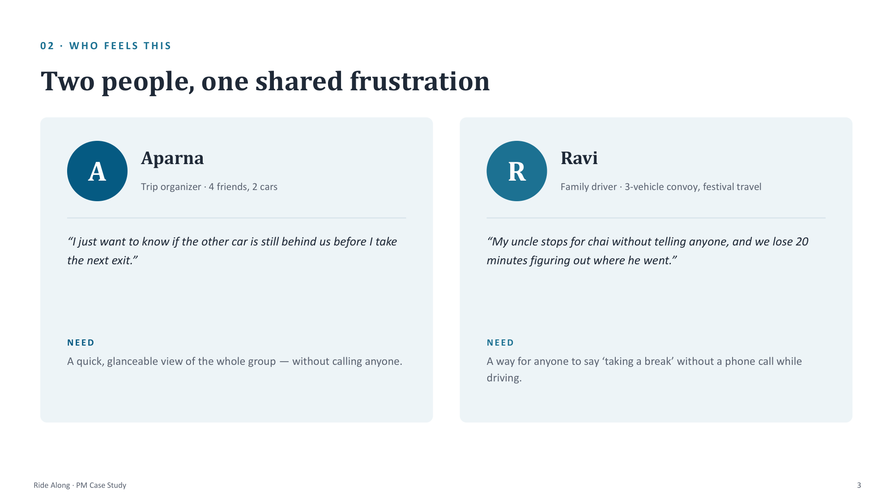
03. Job to be Done
Framing the feature's core utility around driver safety and shared navigation context:
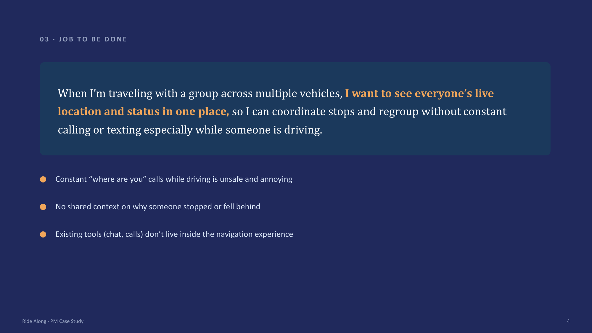
04. Competitive Landscape
While location apps like WhatsApp or Life360 exist, they don't reside inside active turn-by-turn navigation or handle status-based regrouping:
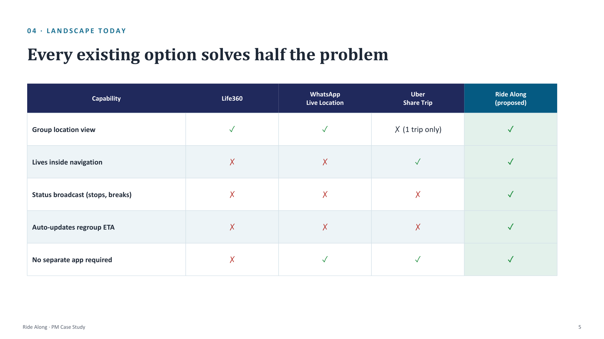
05. Proposed Solution
Layering location sharing, status broadcasts, and smart regroup calculations directly onto the screen people already have open mid-navigation:
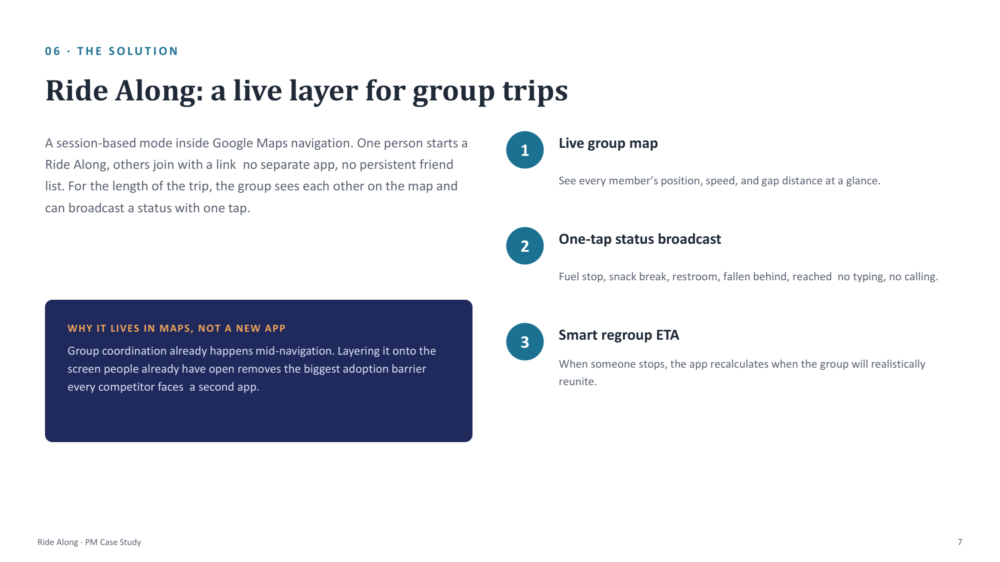
06. Core User Flow
The user path maps a frictionless setup loop, requiring no app installs or friend lists, going directly from session start to auto-regrouping:
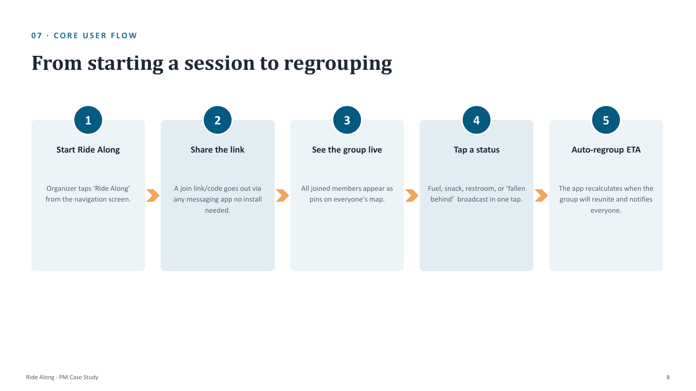
07. Entry Point & Status Controls
A quick-access top navigation bar pill enables immediate entry:
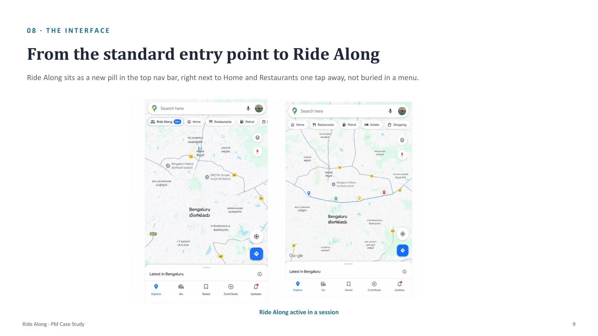
A simple, one-tap grid replaces unsafe calls and texts while driving, broadcasting push updates and pins to the convoy:
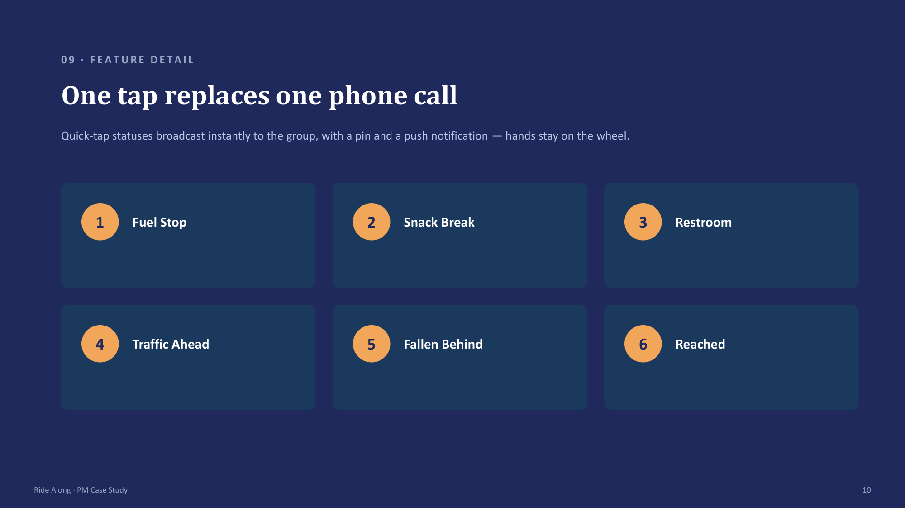
08. Scoping V1
Evaluating features using a MoSCoW prioritization matrix to deliver a high-value, lightweight MVP:
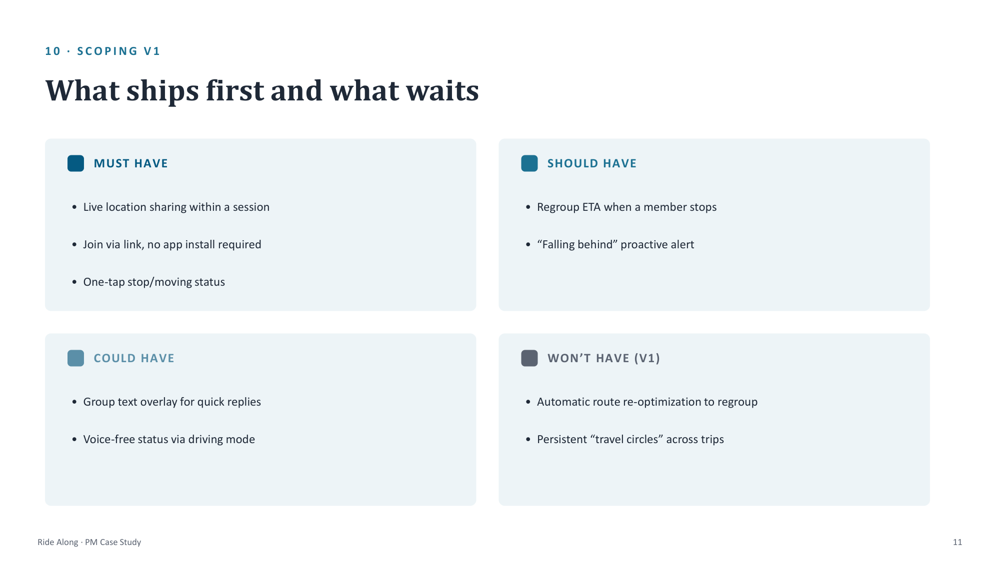
09. Risks, Edge Cases, & Trade-offs
Addressing technical and privacy challenges, including adaptive location pings to protect battery life and offline indicators for signal dead zones:
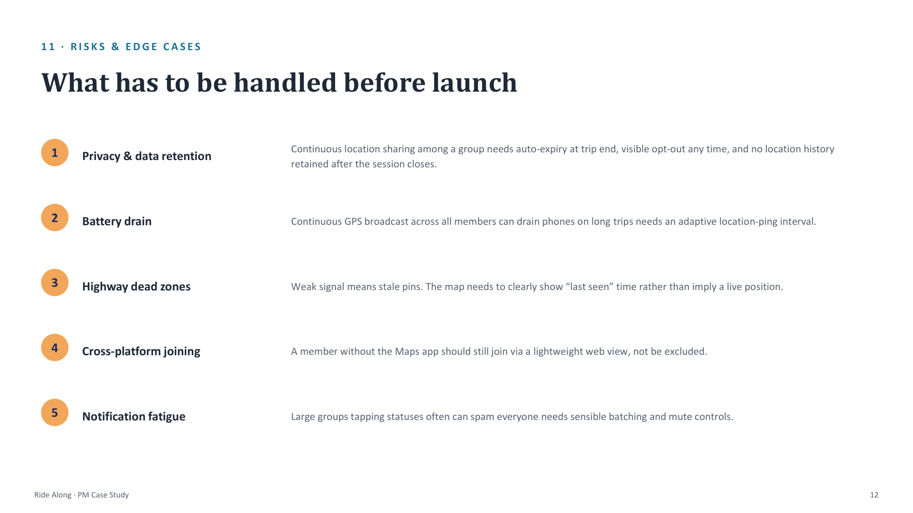
Decisions surrounding entry-point discoverability and trip-scoped consent vs. persistent always-on circles:
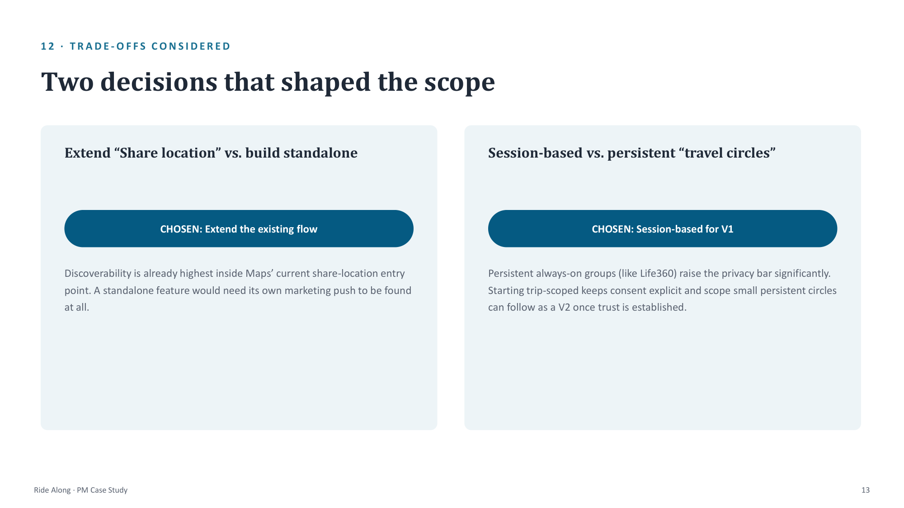
10. Success Metrics & Rollout
Defining core adoption, engagement, and safety indicators, led by a North Star metric focused on successful regrouping:
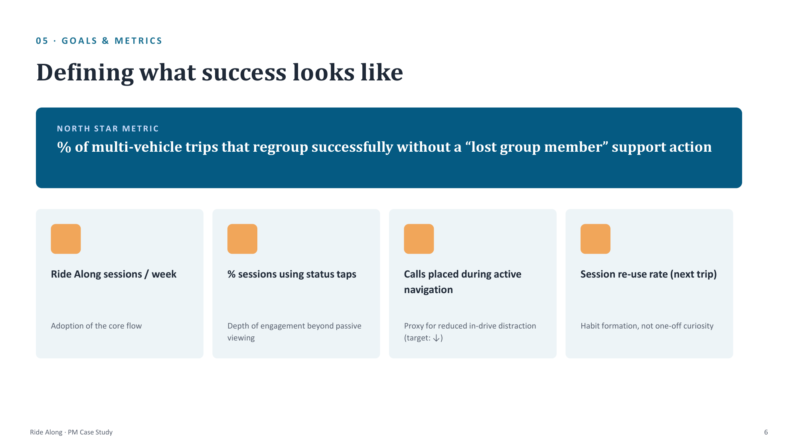
Phased beta rollout scaling from single-digit groups to travel circles:
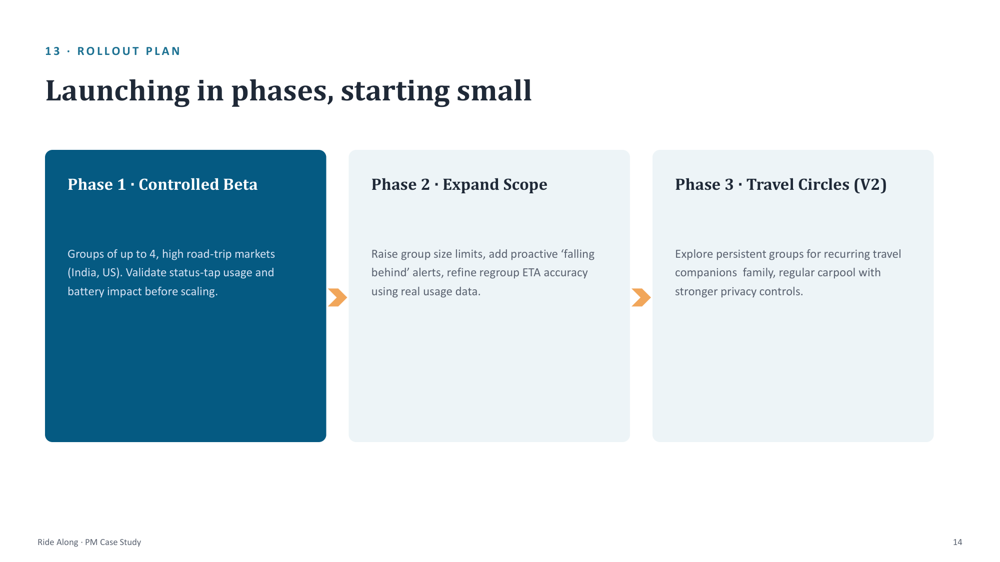
A final synthesis of why the feature matches existing habits and solves a recurring real-world pain:
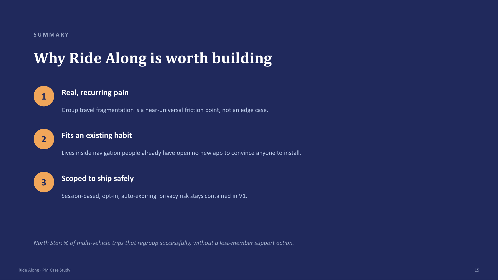